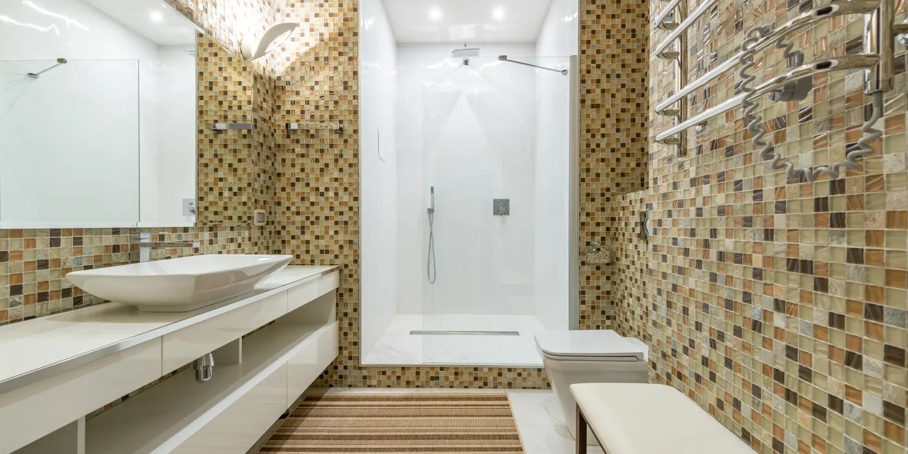
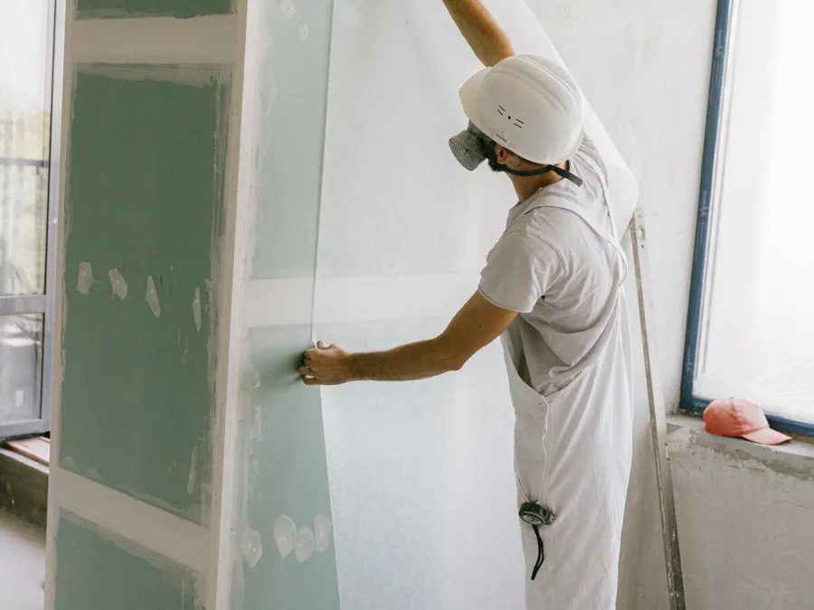

Badrumsrenovering · Säkra Vatten-certifierad
Badrum med dokumenterat tätskikt och fast pris
Vi river ut det gamla, bygger tätskiktet enligt GBR och fotograferar varje skikt innan kaklet åker på. Du får prisintervall efter besiktning, fast pris innan vi börjar och tidplan i veckor. Ett badrum på 6,5 m² i Bromma landade på 178 000 kr och tog 6 veckor.
Vad ett badrum kostar och tar
Sex veckor från rivning till godkänd besiktning
Vi jobbar i ett badrum i taget och har samma arbetsledare från besiktning till slutbesiktning. Det är därför vi kan sätta ett fast pris i stället för löpande räkning.
Priset beror på tre saker: ytan, hur mycket VVS och el som måste dras om, och vilken standard du väljer på kakel, klinker och inredning. En liten yta med gamla rör blir inte billig per kvadratmeter, eftersom rivning, tätskikt och besiktning kostar ungefär lika mycket oavsett storlek.
Sara Öberg är arbetsledare på våra badrum och Säkra Vatten-behörig. Hon gör täthetskontrollen, dokumenterar skikten med foto och är den du ringer om något känns fel under bygget. Jour har vi vardagar 17:00–21:00 för pågående projekt.
De flesta badrum vi gör ligger mellan 4 och 10 m². Under 4 m² blir priset per kvadratmeter högre.
Tätskiktet behöver sin torktid. Den går inte att korta utan att garantin faller.
Efter besiktning lämnar vi fast pris på hela arbetet, skriftligt inom 24 timmar på vardagar.
Omfattning
Vad som ingår
- Rivning av gammalt kakel, klinker, inredning och våtrumsgips. Vi bär ut materialet och städar efter varje arbetsdag.
- Avjämning av väggar och golv så att plattorna ligger plant, med fall mot golvbrunnen i duschzonen.
- Tätskikt enligt GBR med Säkra Vatten-behörig montör, inklusive hörnband, manschetter och rörgenomföringar.
- Byte av golvbrunn och klämring, med ny tätning mot tätskiktet.
- VVS-dragning till dusch, tvättställ, toalett och tvättmaskin. Ny vattenlåsning där det behövs.
- El: uttag, belysning, spegel och handdukstork, kopplat via jordfelsbrytare av registrerad elinstallatör.
- Kakel på väggar och klinker på golv, inklusive korsfogar, fogsil och silikon i alla innerhörn.
- Inredning: tvättställ, blandare, spegelskåp, duschvägg och förvaring enligt din beställning.
- Fläkt med rätt kapacitet för rummets volym, monterad och injusterad.
- Slutbesiktning med protokoll, åtgärd av anmärkningar och 5 års garanti enligt AB 04.
Det här ingår inte: kakel, klinker, inredning och blandare som du köper själv. Vi hjälper dig att räkna ut åtgång och tar emot leveransen på plats.
Inte heller rivning av bärande vägg, flytt av stamledning i fastigheten, asbestsanering i hus byggda före 1982, eller nytt ytskikt i angränsande rum. Hittar vi asbest eller fuktskada stannar arbetet och vi lämnar ett separat skriftligt förslag innan vi fortsätter.

Vecka för vecka
Tidsplan: rivning vecka 1, besiktning vecka 6
Badrummet är obrukbart från vecka 1 till vecka 5. Dusch och toalett finns i källaren eller hos grannen, och vi kan sätta in en tillfällig toalett om du behöver en.
Rivning och stomme
Vi skyddar trapphus och golv, river ut kakel, klinker och gips, och kontrollerar bjälklaget. Skadat underlag byts innan något byggs upp igen.
Rör och el
Ny VVS-dragning till dusch, tvättställ och toalett. Elen dras om med jordfelsbrytare, och du får uttag och belysning där du vill ha dem.
Tätskikt med foto
GBR-tätskikt i två skikt med hörnband och manschetter. Varje skikt fotograferas och fotona följer med i dokumentationen tillsammans med intyget från Säkra Vatten.
Kakel, inredning och besiktning
Klinker på golv med fall mot brunnen, kakel på väggar, fogsil och silikon i hörn. Sedan inredning, spegel, fläkt och slutbesiktning med protokoll.
Kostnadsintervall
Kostnadsintervall per kvadratmeter
Alla siffror är kr utan moms och gäller entreprenad i Stockholmsområdet 2026. Efter besiktning lämnar vi fast pris.
- Enkel standard, nytt men enkelt material17 000–21 000 kr/m²
- Standard, kakel och klinker i vanlig kvalitet21 000–25 000 kr/m²
- Högre standard, storformat och infälld nisch25 000–30 000 kr/m²
- Tillval, t.ex. handdukstork eller tillfällig toalett4 500–18 000 kr
| Yta | Prisintervall | Tidsplan | Kommentar |
|---|---|---|---|
| 4 m² | 90 000–150 000 kr | 4–6 veckor | Litet badrum i lägenhet, en dusch. |
| 6 m² | 100 000–180 000 kr | 5–6 veckor | Dusch, tvättställ och toalett. |
| 6,5 m² i Bromma | 178 000 kr | 6 veckor | Genomfört 2025, fast pris utan tillägg. |
| 8 m² | 160 000–240 000 kr | 6–7 veckor | Plats för tvättmaskin och torktumlare. |
| 10 m² | 200 000–300 000 kr | 7–8 veckor | Större badrum, ofta i villa. |
Ändringar beställs skriftligt innan de utförs, så att sluträkningen stämmer med det fasta priset. Vill du prova din egen yta direkt finns kostnadskalkylatorn.
Arbetssätt
Så gör vi
Vi besiktigar badrummet innan vi räknar på det. Då ser vi om bjälklaget behöver förstärkas, var stammen sitter och om ventilationen räcker till. Efter besiktningen får du ett skriftligt förslag med fast pris och en tidplan i veckor.
Under bygget gör vi en täthetskontroll innan kaklet läggs och fotograferar varje skikt. Du får fotona tillsammans med intyget från Säkra Vatten i slutdokumentationen, vilket är det underlag ditt försäkringsbolag frågar efter vid en vattenskada.
Vi har 14 anställda: 9 hantverkare, 3 arbetsledare, 1 kalkylator och 1 kontorschef. Den som besiktigar är också den som sätter priset, så ingen säljare kan lova mer än hantverkarna kan hålla.
- Namngiven arbetsledare från besiktning till slutbesiktning
- Skriftlig tidplan i veckor, utskickad i vecka 1
- Foto per skikt innan kakel och klinker läggs
- Täthetskontroll med intyg från Säkra Vatten
- Städning efter varje arbetsdag
- Ändringsarbete beställs skriftligt innan det utförs
- Slutbesiktning med protokoll och anmärkningar åtgärdade
- 5 års garanti enligt AB 04 och ansvarsförsäkring hos Trygg-Hansa
Frågor och svar
Frågor om badrumsrenovering
Hur vet jag att tätskiktet är rätt gjort?
Du får foton på varje skikt innan kaklet läggs, och ett intyg från en Säkra Vatten-certifierad montör. Vi gör dessutom en täthetskontroll innan klinkern åker på. Materialet ska vara GBR-godkänt, hörn och rörgenomföringar ska vara bandade och golvet ska ha fall mot brunnen.
Vår arbetsledare Sara Öberg är Säkra Vatten-behörig och ansvarar för badrum och tätskikt. Be gärna om underlaget vid besiktningen, det ska finnas i pärmen på plats.
Hur länge är badrummet obrukbart?
Räkna med 5 veckor utan dusch. Vecka 1 river vi, vecka 2 drar vi rör och el, vecka 3 läggs tätskiktet, vecka 4 kaklas det och vecka 5 monteras inredningen. I vecka 6 besiktigar vi och du kan använda badrummet.
Toaletten går oftast att behålla till mitten av vecka 1. Behöver du en tillfällig toalett i lägenheten kostar den 4 500–6 000 kr och står i ett angränsande rum under bygget.
Vad kostar ett badrum på 6 m²?
Mellan 100 000 och 180 000 kr utan moms, beroende på standard och hur mycket VVS och el som måste dras om. Ett färdigt exempel: badrum 6,5 m² i Bromma, 178 000 kr och 6 veckor.
Vi lämnar ett prisintervall efter besiktning och skriftligt fast pris inom 24 timmar på vardagar. Boka besiktningen, den är kostnadsfri och tar cirka 45 minuter.
Snittbetyg 4,8 av 5 över 63 omdömen. Ett exempel från en kund i Bromma, badrum 6,5 m² 2025: tätskiktet dokumenterades med foton i varje steg och tidplanen från vecka 1 höll hela vägen.
Nästa steg
Andra tjänster
Boka kostnadsfri besiktning av badrummet
Vi mäter ytan, tittar på rör och ventilation och lämnar skriftligt förslag inom 24 timmar på vardagar. Besiktningen tar cirka 45 minuter och du binder inget.
Grundat 2004 · 312 projekt i Stockholmsområdet · Säkra Vatten-certifierade · 5 års garanti enligt AB 04